Российский университет дружбы народов им. П. Лумумбы
Цель работы
Изучить основы программирования в оболочке ОС UNIX. Научится писать
более сложные командные файлы с использованием логических управляющих
конструкций и циклов.
Задание
Используя команды getopts grep, написать командный файл, который
анализирует командную строку с ключами: – -iinputfile — прочитать данные
из указанного файла; – -ooutputfile — вывести данные в указанный файл; –
-pшаблон — указать шаблон для поиска; – -C — различать большие и малые
буквы; – -n — выдавать номера строк. а затем ищет в указанном файле
нужные строки, определяемые ключом -p.
Написать на языке Си программу, которая вводит число и определяет,
является ли оно больше нуля, меньше нуля или равно нулю. Затем программа
завершается с помощью функции exit(n), передавая информацию в о коде
завершения в оболочку. Командный файл должен вызывать эту программу и,
проанализировав с помощью команды S?, выдать сообщение о том, какое
число было введено.
Написать командный файл, создающий указанное число файлов,
пронумерованных последовательно от 1 до 𝑁 (например 1.tmp, 2.tmp,
3.tmp,4.tmp и т.д.). Число файлов, которые необходимо создать,
передаётся в аргументы командной строки. Этот же ко- мандный файл должен
уметь удалять все созданные им файлы (если они существуют).
Написать командный файл, который с помощью команды tar запаковывает
в архив все файлы в указанной директории. Модифицировать его так, чтобы
запаковывались только те файлы, которые были изменены менее недели тому
назад (использовать команду find).
Выполнение лабораторной
работы
1.Создаю исполняемый файл для первого задания.
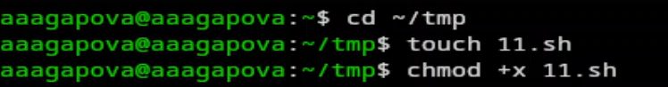
Создание файла
2.Пишу программу.
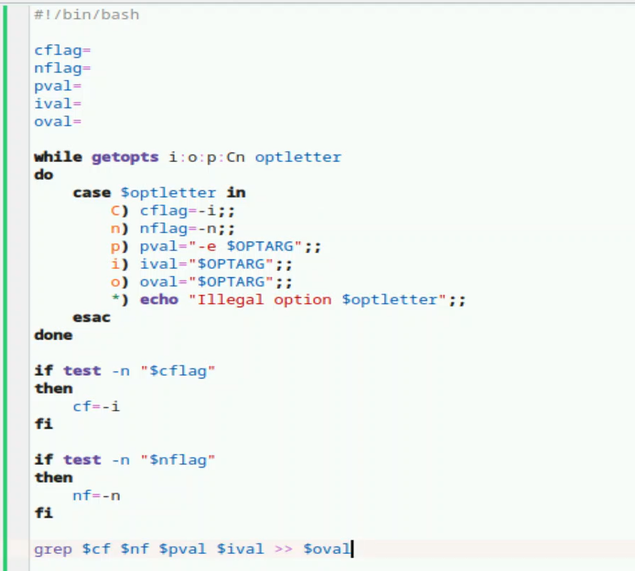
Код
3.Создаю файл input.txt.
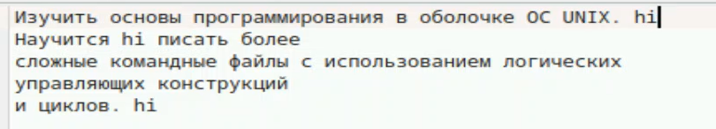
Создание файла
4.Результат работы программы.
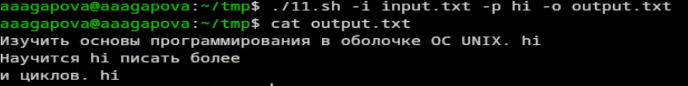
Результат
5.Создаю исполняемый файл для второго задания.
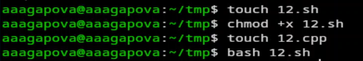
Создание файла
6.Пишу программу в файле 12.c.
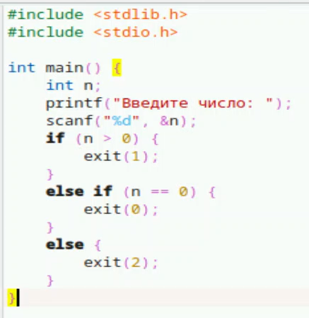
Код
7.Пишу программу в файле 12.sh.
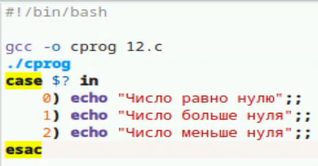
Код
8.Проверяю работу программы двумя способами.
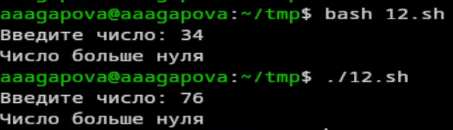
Результат
9.Создаю исполняемый файл для третьего задания.
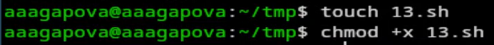
Создание файла
10.Пишу программу.
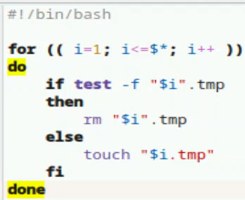
Код
11.Проверяю работу программы.
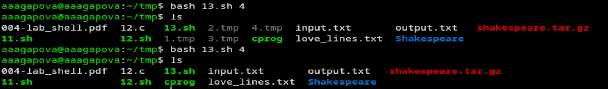
Результат
12.Создаю исполняемый файл для четвертого задания.
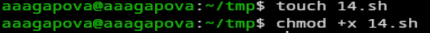
Создание файла
13.Пишу программу.
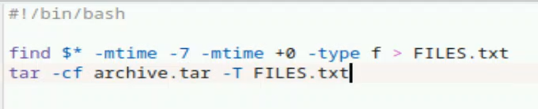
Код
14.Проверяю работу программы.
Проверка
15.Архив создался.
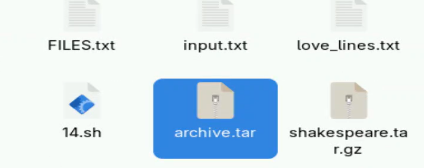
Результат
Выводы
Я изучила осоновы программирования в оболочке OC UNIX, научилась
писать более сложные командные файлы с использованием логических
управляющих конструкций и циклов.